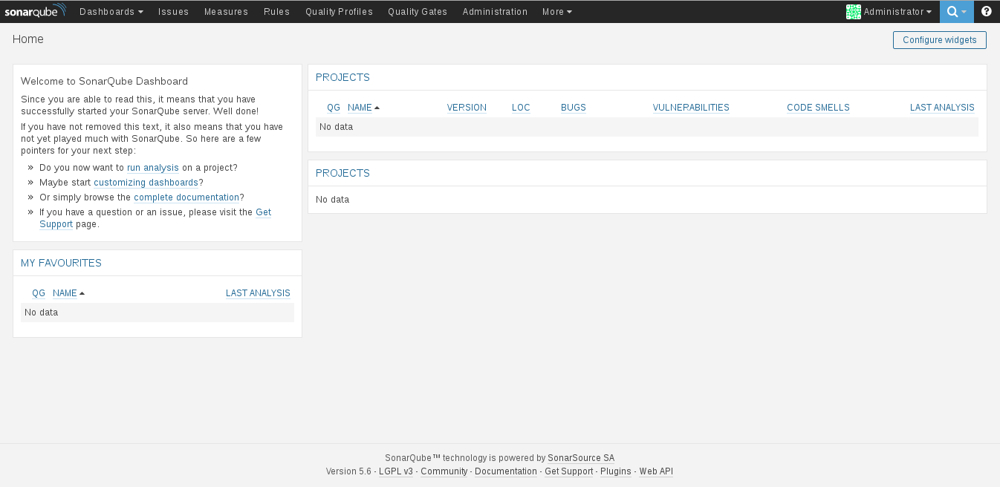

Correr sonarqube desde un contenedor Docker
Publicado el vie 08 julio 2016 en Tutorial de Docker • 3 min de lectura
Continuando con los artículos de Docker, en este caso se muestra como iniciar SonarQube conectado a una base de datos PostgreSQL y pasando los datos de la base de datos por medio de variables de ambiente.
Sonarqube es una plataforma para evaluar código fuente (tomado de wikipedia).
Los artículos anteriores sobre Docker son:
-
Iniciando Django con docker usando docker-compose con postgresql como microservicio.
-
Crear un entorno de Integración y Despligue continue con Docker para node.js.
-
Ejecutar una prueba de unittest en Python con un contenedor Docker.
-
Montar una Plataforma como servicio (PaaS) con Dokku (docker).
-
Instalar Jenkins por medio de Docker y crear una imagen Docker de Jenkins
-
Crear un contenedor Docker como entorno de desarrollo para Sails.js.
-
Correr aplicaciones de escritorio desde un contenedor Docker.
-
Usar dockerui para la gestión de imágenes y contenedores de Docker
-
Crear datos JSON a partir de un diccionario en Flask (parte 1) (actualización- Docker)
La guía de configuración y uso de contenedores Docker para sonarqube lo pueden ver en el enalce de Docker hub.
Lo primero que se hará es iniciar un contenedor de postgreSQL:
docker run -d --name postgres2 --restart always -e POSTGRES_PASSWORD=sonar -e POSTGRES_USER=sonar postgres
Se define que el usuario de la base de datos es sonar y su clave es sonar.
Ahora se inicia el contenedor de sonarqube:
docker run -d --name sonarqube --restart always -p 9000:9000 -p 9092:9092 -e SONARQUBE_JDBC_USERNAME=sonar -e SONARQUBE_JDBC_PASSWORD=sonar -e SONARQUBE_JDBC_URL=jdbc:postgresql://postgres2/sonar --link postgres2:postgres sonarqube
Se le pasan los puertos donde estará sonarqube (9000 y 9092), se le pasa la configuración de la base de datos a sonarqube (usuario, clave y url de conexión que usará el nombre del contenedor de postgres) y se enlace con el contenedor de postgres.
A continuación se muestra una captura de pantalla del contenedor corriendo:

Para terminar se muestran los contenedores corriendo:
docker ps
CONTAINER ID IMAGE COMMAND CREATED STATUS PORTS NAMES
e20d4108f54f sonarqube "./bin/run.sh" 29 minutes ago Up 29 minutes 0.0.0.0:9092->9092/tcp, 0.0.0.0:49000->9000/tcp sonarqube
e3387c2754d1 postgres "/docker-entrypoint.s" 6 hours ago Up 6 hours 5432/tcp postgres2
¡Haz tu donativo! Si te gustó el artículo puedes realizar un donativo con Bitcoin (BTC) usando la billetera digital de tu preferencia a la siguiente dirección: 17MtNybhdkA9GV3UNS6BTwPcuhjXoPrSzV
O Escaneando el código QR desde la billetera: